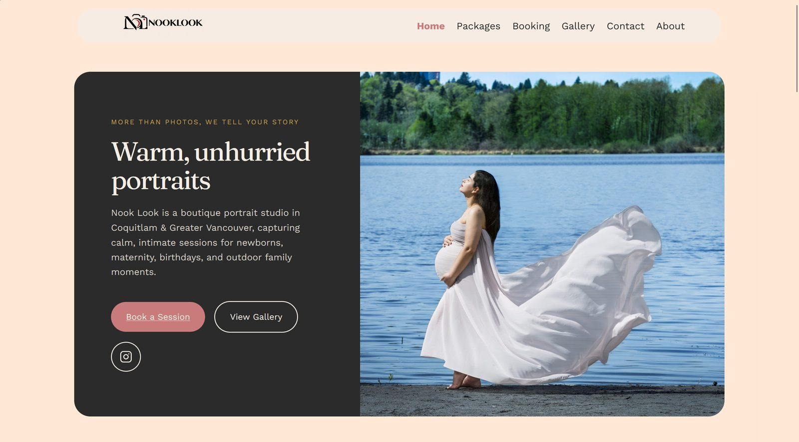
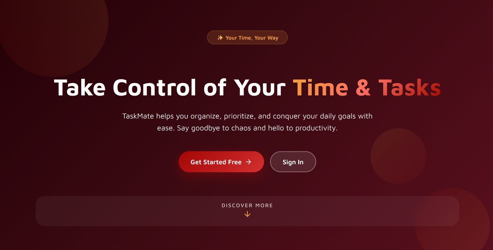

Selected work
Projects
Client work and coursework I've built end-to-end, with the reasoning behind each decision written up alongside the code.

The full web presence for a Coquitlam portrait studio: four priced service lines, a booking pipeline, a filterable gallery, and local SEO. Built and launched solo.
The client asked for WordPress, then asked for things WordPress does not do. Custom content types, hand-written structured data, and managed code snippets closed the gap with no recurring plugin cost.
A five-page site for a Persian kebab food truck in Vancouver: the truck menu, catering packages, and an order builder customers use before they reach the window.
The order builder is plain JavaScript with no backend and no payment step. It totals a customer's picks and hands them a summary to read at the counter, which is what a food truck actually needs. Catering pages re-point the brand accent from red to gold through a single data attribute, so one stylesheet carries two moods.
A bilingual restaurant site in English and Farsi, with a password-protected admin panel so the owner changes the menu, prices, hours, and reservations without touching code.
React 19 on the front, Node, Express, and SQLite on the back. Role-based admin accounts, a reservation pipeline with email confirmations, photo uploads, and per-page SEO metadata. Launching once the domain is live.

A mobile-friendly task manager built so students stop losing deadlines across five different apps.
Shipped end-to-end with Firebase auth and Firestore, then tested by a 9-person class team against real course workloads.